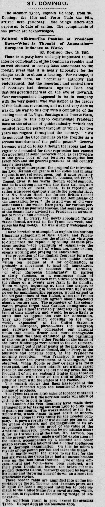
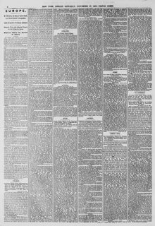

Who came to this city to congratulate President fiaez on the advance of public industryQuien vino a esta ciudad a felicitar al presidente Báez por el avance de la industria pública
The New York Herald. New York [N.Y.], November 27, 1869. Page 4.The New York Herald. New York [N.Y.], 27 de noviembre de 1869. Página 4. View the originalVer el original


See the full pageVer la página completaGeneral Luccano reported to President Báez that public enterprise and tranquility had increased over the past two years, dismissing frontier Caco guerrillas as a minor disturbance. The newspaper also noted that a proposal to introduce 4,000 German immigrants was awaiting action with the reported support of French Consul M. Landals, and that former British Consul Mr. Martin Hood was rumored to return to counter the "annexation fever," drawing opposition from the Báez party. Additionally, newly appointed U.S. Consul Major E. H. Perry arrived in the Tybee, raised his flag, and was warmly welcomed by Báez.El general Luciano informó al presidente Báez que la laboriosidad y la paz pública se habían consolidado en el bienio transcurrido, restando importancia a las partidas guerrilleras de cacos fronterizos por considerarlas meros desórdenes aislados. El rotativo indicó asimismo que un proyecto para asentar a 4.000 colonos alemanes aguardaba sanción oficial con el concurso del cónsul francés M. Landais, circulando el rumor del regreso del antiguo cónsul británico Martin Hood para contrarrestar la «fiebre anexionista», lo que desató el recelo del bando baecista. Además, el recién designado cónsul de los Estados Unidos, mayor E. H. Perry, arribó a bordo del Tybee, izó su enseña y fue calurosamente agasajado por Báez.
FULL TEXT:TEXTO COMPLETO:
ST. DOMINGO.SANTO DOMINGO.
The steamer Tybee, Captain Delanoy, from St. Domingo the 16th and Porto Plata the 19th, arrived here yesterday. She brings letters and papers up to date of sailing. The compliments of the purser are acknowledged.El vapor Tybee, capitán Delanoy, procedente de Santo Domingo el 16 y de Puerto Plata el 19, llegó aquí ayer. Trae cartas y periódicos hasta la fecha de su salida. Se agradecen las cortesías del sobrecargo.
Political Affairs—The Position of President Baez—What Is Thought of Annexation—European Influence at Work.Asuntos políticos—La posición del presidente Báez—Lo que se piensa de la anexión—Influencia europea en acción.
ST. DOMINGO, Nov. 16, 1869.SANTO DOMINGO, 16 de noviembre de 1869.
There is a party here so deeply implicated in the interior complication of the Dominican republic and so well situated to convey false statements to the foreign press that it is nearly impossible for the simple truth to obtain a hearing. For example, it went from here, on "consular" authority and endorsement, that the important and central town of Santiago had declared against Baez and that this government was on the eve of downfall. Your correspondent happened to be in company with the very general who was named as the leader of this fictitious revolution, and at that very date he was on his way to this city with a committee of the leading men of La Vega, Santiago and Puerte Plata, who came to this city to congratulate President Baez on the advance of public industry "which had resulted from the perfect tranquillity which for two years has reigned throughout the country." "We do not count the Caco guerillas on the frontier as a serious disturbance of the public peace." General Luccano went on to say although the labors and the vigilance demanded for their repression has caused the government some inconvenience, as everywhere in the great body of our territory enterprise has taken root and the general products of the country largely increased.Hay aquí un partido tan profundamente implicado en la complicación interior de la república dominicana y tan bien situado para transmitir afirmaciones falsas a la prensa extranjera que es casi imposible que la simple verdad obtenga audiencia. Por ejemplo, salió de aquí, con autoridad y respaldo «consulares», que la importante y céntrica ciudad de Santiago se había declarado contra Báez y que este gobierno estaba en vísperas de caer. Su corresponsal se hallaba por casualidad en compañía del mismo general que fue nombrado como cabecilla de esta ficticia revolución, y en esa misma fecha él venía de camino a esta ciudad con un comité de los hombres principales de La Vega, Santiago y Puerte Plata, quienes vinieron a esta ciudad a felicitar al presidente Báez por el avance de la industria pública «que había resultado de la perfecta tranquilidad que por dos años ha reinado en todo el país». «No contamos las guerrillas Caco en la frontera como una perturbación seria de la paz pública». El general Luccano continuó diciendo que aunque las labores y la vigilancia demandadas para su represión han causado al gobierno alguna inconveniencia, en todo el gran cuerpo de nuestro territorio la empresa ha echado raíces y los productos generales del país han aumentado en gran medida.
Speaking of enterprises, the proposal for introducing 2,000 German emigrants in the coffee and mining regions is not yet acted upon, but it most probably will be, as it is believed that M. Landais, the French Consul, gives it his warm though secret support, and he is a strong man with the Baez Cabinet, and is also a man of liberal ideas. It is reported, or rather whispered cautiously inside the consular ring, that Mr. Martin Hood, the former British Consul here, is to be sent back "to cure the Dominicans of the annexation fever." He is and was of old very obnoxious to the whole Baez party, for various personal as well as political reasons, and some members of the Senate have advised the President in advance not to receive him officially.Hablando de empresas, la propuesta para introducir 2,000 emigrantes alemanes en las regiones cafetaleras y mineras aún no ha sido decidida, pero muy probablemente lo será, pues se cree que M. Landais, el Cónsul francés, le da su caluroso aunque secreto apoyo, y él es un hombre fuerte ante el Gabinete de Báez, y es también un hombre de ideas liberales. Se informa, o más bien se susurra cautelosamente dentro del círculo consular, que el Sr. Martin Hood, el anterior Cónsul británico aquí, ha de ser enviado de vuelta «para curar a los dominicanos de la fiebre de la anexión». Él es y fue desde antiguo muy odioso para todo el partido de Báez, por diversas razones tanto personales como políticas, y algunos miembros del Senado han aconsejado al Presidente de antemano que no lo reciba oficialmente.
Major K. H. Perry, the newly appointed United States Consul, arrived in the Tybee last week, and raises his flag to-day. He was warmly welcomed by Baez.El mayor K. H. Perry, el Cónsul de los Estados Unidos recién nombrado, llegó en el Tybee la semana pasada, y enarbola su bandera hoy. Fue calurosamente acogido por Báez.
I have heretofore attempted to explain the curious triangular antagonism of Baez, Cabral and Pimentel, each of whom accuses the other of an "intrigue to dismember the republic by selling its most precious section"—the peninsula of Samaná—to the United States, and all of whom are, more or less, openly working and praying for annexation.He intentado anteriormente explicar el curioso antagonismo triangular de Báez, Cabral y Pimentel, cada uno de los cuales acusa al otro de una «intriga para desmembrar la república vendiendo su sección más preciosa»—la península de Samaná—a los Estados Unidos, y todos los cuales están, más o menos, trabajando y orando abiertamente por la anexión.
The proposition of the English Company for a free port at Manzanilla with all the public lands within ten leagues of it for colonization, is probably a movement to head off annexation. The proposal is to establish the Germans, "or other European immigrants" in parties of thirty families, in a continuous chain of settlements, giving to each man a three acre block in the village or a twenty acre farm in its vicinity. These villages, beginning at their fine seaport of Manzanilla and taking in some sites with fine water power for manufacturing purposes, would extend to the old gold mines of San Rafael, which the French and Spanish governments agreed should be closed about a century ago. The promoters of this colonization project forget that German immigrants to America are almost invariably intensely loyal to the land of their adoption and would be more likely to swell than to oppose the vote for annexation. They also forget when debating on the "unwieldy expansion" of the United States—a favorite European phrase—that the telegraph and railways have compacted our national limits into much firmer and more manageable bounds than the Union exhibited at the beginning of this century, before either Florida or the States of the lower Mississippi were added to the old thirteen. Baez himself put it rather neatly at the introduction of the new United States Consul, Major Perry, to the Ministers and consular corps, at the President's morning reception. "San Francisco is now very much nearer the government at Washington," he observed, "than Mobile or New Orleans was forty years past, and all these islands are within easier reach of the commerce (he did not say arms, but he thought it) of all its seaboard States than those of the Atlantic with those of the Gulf of Mexico or either of them with the States of the Pacific."La proposición de la Compañía Inglesa de un puerto libre en Manzanilla con todas las tierras públicas dentro de diez leguas de él para colonización, es probablemente un movimiento para adelantarse a la anexión. La propuesta es establecer a los alemanes, «u otros inmigrantes europeos», en grupos de treinta familias, en una cadena continua de asentamientos, dando a cada hombre un lote de tres acres en el pueblo o una granja de veinte acres en su vecindad. Estos pueblos, comenzando en su fino puerto marítimo de Manzanilla y abarcando algunos sitios con fina fuerza hidráulica para fines manufactureros, se extenderían hasta las viejas minas de oro de San Rafael, que los gobiernos francés y español acordaron que debían cerrarse hace aproximadamente un siglo. Los promotores de este proyecto de colonización olvidan que los inmigrantes alemanes en América son casi invariablemente intensamente leales a la tierra de su adopción y sería más probable que engrosaran que se opusieran al voto en favor de la anexión. También olvidan, al debatir sobre la «expansión inmanejable» de los Estados Unidos—una frase europea favorita—que el telégrafo y los ferrocarriles han compactado nuestros límites nacionales en confines mucho más firmes y manejables que los que la Unión exhibía a principios de este siglo, antes de que ni Florida ni los Estados del bajo Misisipi fueran añadidos a los trece originales. El propio Báez lo expresó bastante bien en la presentación del nuevo Cónsul de los Estados Unidos, el mayor Perry, a los Ministros y al cuerpo consular, en la recepción matutina del Presidente. «San Francisco está ahora mucho más cerca del gobierno en Washington», observó, «que lo que Mobile o Nueva Orleans estaban hace cuarenta años, y todas estas islas están al alcance más fácil del comercio (no dijo armas, pero lo pensó) de todos sus Estados costeros que los del Atlántico con los del Golfo de México o cualquiera de ellos con los Estados del Pacífico».
This remark shows that Baez has looked at the map and reflected upon the beauties of a free exchange of products.Esta observación muestra que Báez ha mirado el mapa y ha reflexionado sobre las bellezas de un libre intercambio de productos.
The Tybee takes on 3,000 bales of tobacco in transit for Europe, that is if the horrible roads will allow of getting down to port in time.El Tybee toma 3,000 balas de tabaco en tránsito para Europa, eso si los horribles caminos permiten bajar al puerto a tiempo.
The London Alta Vela Company have made their arrangements for taking out from 1,000 to 5,000 tons of guano per month. The works started by the Baltimore firm, which Spain turned adrift so unceremoniously, come in very nicely for the London company. It pays a royalty of five dollars per ton on all the guano exported, and the magnitude of its arrangements is the best proof of the value of the American discovery. There can be no mistake about it, for, as I wrote you at the time, Mr. Lawson, one of the present owners, made a careful exploration of the island, accompanied by a chemist and other guano savans, with laborers and all other appliances for a thorough examination. On this he offers a royalty of one pound per ton and takes the island.La London Alta Vela Company ha hecho sus arreglos para extraer de 1,000 a 5,000 toneladas de guano por mes. Las obras iniciadas por la firma de Baltimore, que España expulsó tan sin ceremonia, vienen muy bien para la compañía londinense. Paga una regalía de cinco dólares por tonelada sobre todo el guano exportado, y la magnitud de sus arreglos es la mejor prueba del valor del descubrimiento estadounidense. No puede haber error en ello, pues, como les escribí en su momento, el Sr. Lawson, uno de los actuales propietarios, hizo una cuidadosa exploración de la isla, acompañado de un químico y otros sabios del guano, con trabajadores y todos los demás aparatos para un examen minucioso. Sobre esto ofrece una regalía de una libra por tonelada y toma la isla.
It is hardly worth the space to say that for the last six weeks the Cacos have had an uncomfortable time on the Dominican frontier. Two of their officers—Curul and Volla—have been captured, and their great Dominican leader, the brave but misguided General Cabral, narrowly escaped by leaving his horse and throwing himself down an almost impracticable ravine.Apenas vale el espacio decir que durante las últimas seis semanas los Cacos han tenido un tiempo incómodo en la frontera dominicana. Dos de sus oficiales—Curul y Volla—han sido capturados, y su gran jefe dominicano, el valiente pero extraviado general Cabral, escapó por poco dejando su caballo y arrojándose por un barranco casi impracticable.
These border raids are amplified into undue importance by the St. Thomas and Jamaica press, out of spite for Baez's supposed intention to cede Samaná to the United States for a naval station, which, of course, is regarded as the entering wedge of annexation.Estas incursiones fronterizas son amplificadas con indebida importancia por la prensa de Santo Tomás y Jamaica, por despecho hacia la supuesta intención de Báez de ceder Samaná a los Estados Unidos para una estación naval, lo cual, por supuesto, es considerado como la cuña inicial de la anexión.
No American vessel in port except the steamer Tybee. Europe does all the business here.Ningún buque estadounidense en puerto excepto el vapor Tybee. Europa hace todos los negocios aquí.
This collection gathers the coverage of the Dominican Republic in the American press, in the order it was published.Esta colección reúne la cobertura de la República Dominicana en la prensa estadounidense, en el orden en que se publicaron.